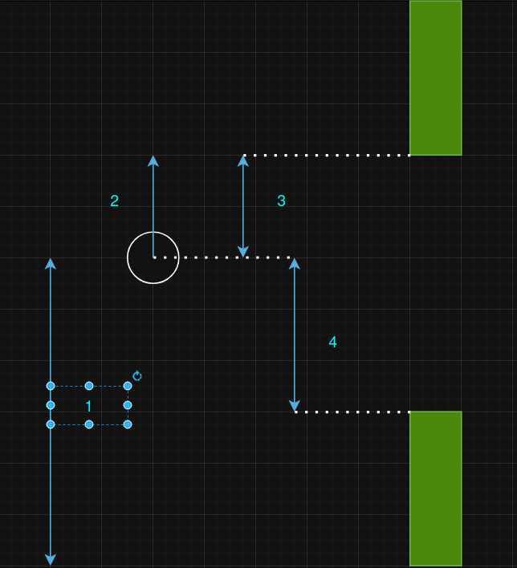
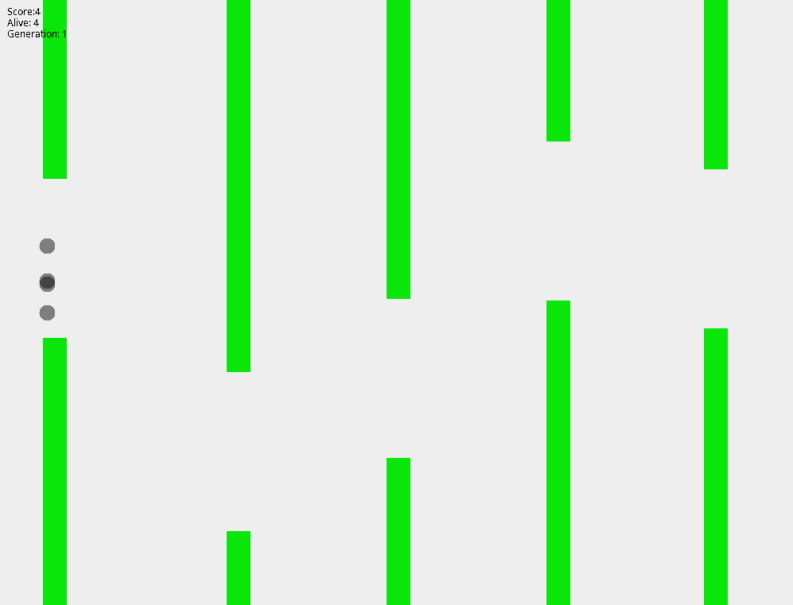
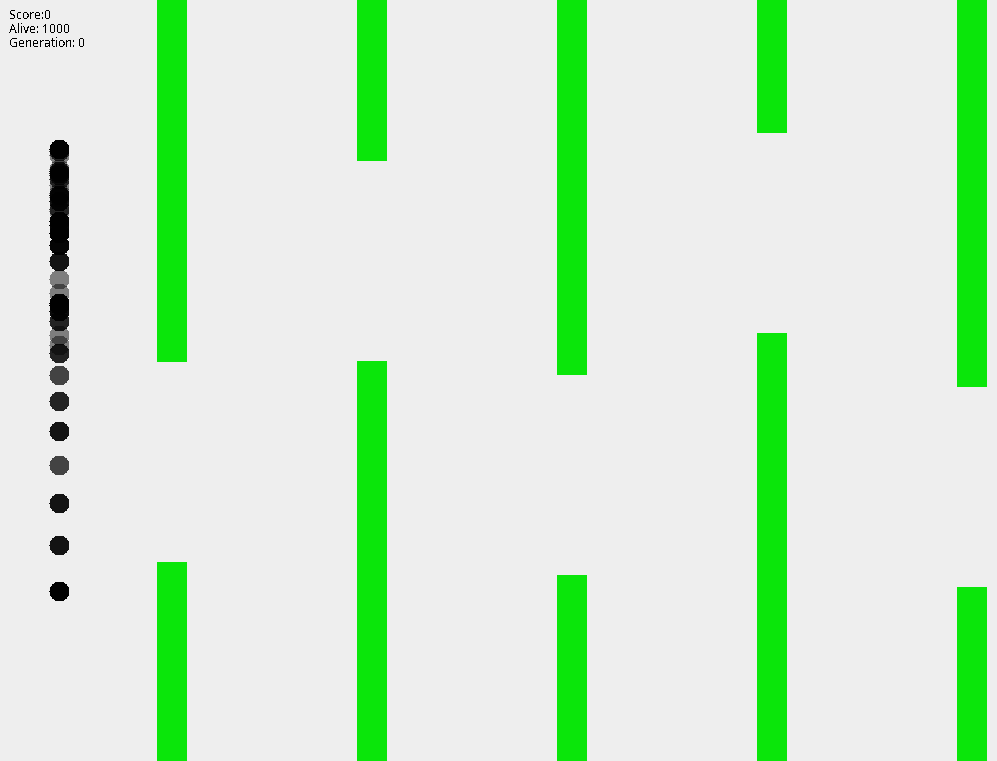
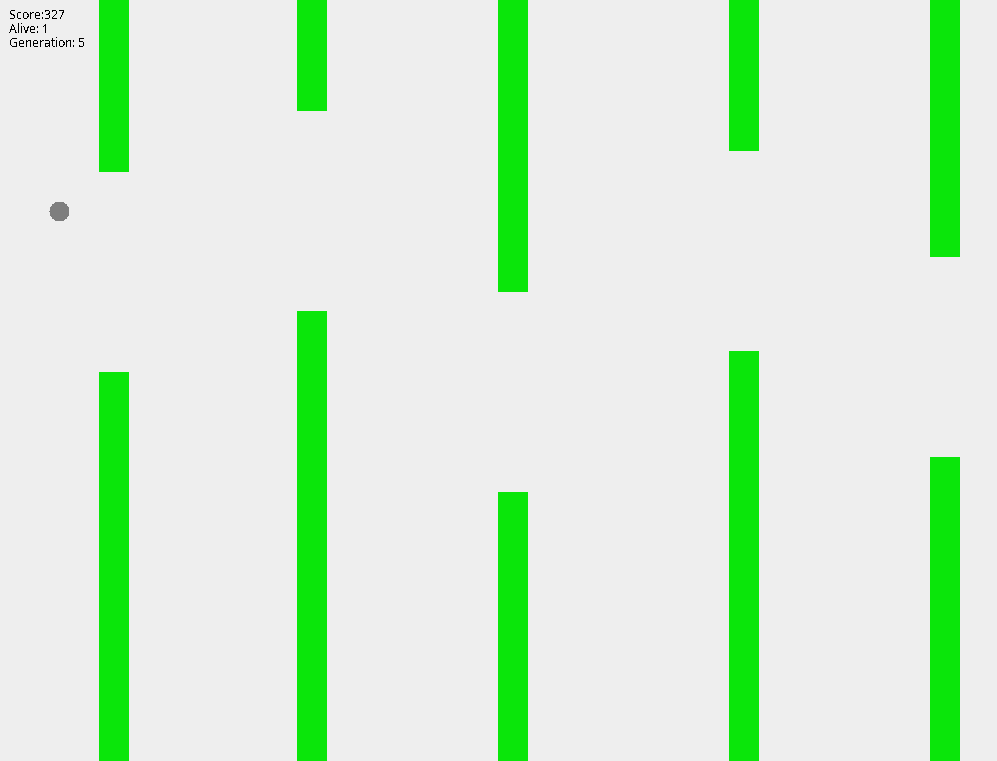

Contexte
Le fonctionnement des IAs était très sombre pour moi et c'est donc comme ça que j'ai voulu créer un réseau de neuronnes de zéro. Après quelques recherches sur internet j'ai vu que pour un débutant, il était recommander de le faire sur une tâche assez simple. C'est alors que j'ai pensé à ce jeu.
Le Jeu
La première étape était de refaire le jeu afin que le réseau puisse facilement avoir accès aux informations en jeu. La création du jeu n'est pas le plus intéressant donc nous allons passer cette étape assez vite.
Fonctionnement de l'IA
Nous arrivons donc a la partie importante du projet. Notre IA repose sur la nature et plus particulièrement la dérivation génétique.
Le fonctionnement repose sur 3 étapes précises répétés un nombre non-défini de fois.
- Laisser chaque individu évoluer dans son milieu.
- Evaluer leur expérience dans ce milieu
- Reproduction des meilleurs car
Nous appelerons génération l'ensemble des individus appartenant à une même boucle. En répétant ce processus encore et encore, les générations deviennent de plus en plus forte car elles gardent les attributs génétiques des meilleurs individus de la génération précédente.
Réseau de neuronnes
Nous suivons donc ce même principe, avec les réseau de neuronnes où le poids et le biais varient de manière aléatoire. Les réseaux de neuronnes les plus performants sont mutés entre eux et dupliqué avec une petite partie de modification afin de tendre vers des réseaux de plus en plus performant.

Afin qu'il puisse progresser, il a besoin de différents entrées :
- distance verticale du bas
- vitesse verticale
- ditance verticale par rapport au tuyau du haut
- ditance verticale par rapport au tuyau du bas
Avec ces paramètres, le reseau de neuronnes identifie si à chaque frame il faut qu'il batte des ailes ou non.
On peut voir qu'au bout de la 15ème génération, on obtient des résultats satisfaisant avec un agent obtenant plus de 50 de score. Lors de son échec, 1000 nouveaux agents ayant obtenu les gênes des meilleurs de la généeration précédente.
Démonstration
L'IA en action :
Sur cette démo, on peut voir que dès la première génération, un agent arrive à 4 de score. Le hasard a bien fait les choses et va donc nous faire progresser très vite. Sur la 4ème génération, on arrive à un score maximal de 8. La génération suivante va aller moins loin alors que les 10 meilleurs agents sont gardés de manière identique d'une génération à l'autre.
Cette baisse de performance vient du facteur aléatoire des tuyaux. Un agent peut être très performant sur une partie et échoué dans un enchainement précis de plusieurs hauteurs cibles. L'aléatoire a donc une place importante dans ce mode d'apprentissage.
Enfin, la dernière génération visible (9) va atteindre plus de 50 score. L'aléatoire nous a été très favorable au départ mais la courbe de progression était plutôt lente dans le cas démontré. Vous pouvez voir dans la Galerie, un score de 327 pour une 5 ème génération.
Galerie



Ce que j'en retiens
J'ai donc appris comment fonctionnait un réseau de neuronnes (biais, weight) et l'algorithme de dérivation génétique que j'apprécie pour son inspiration qui font ce que notre monde est.